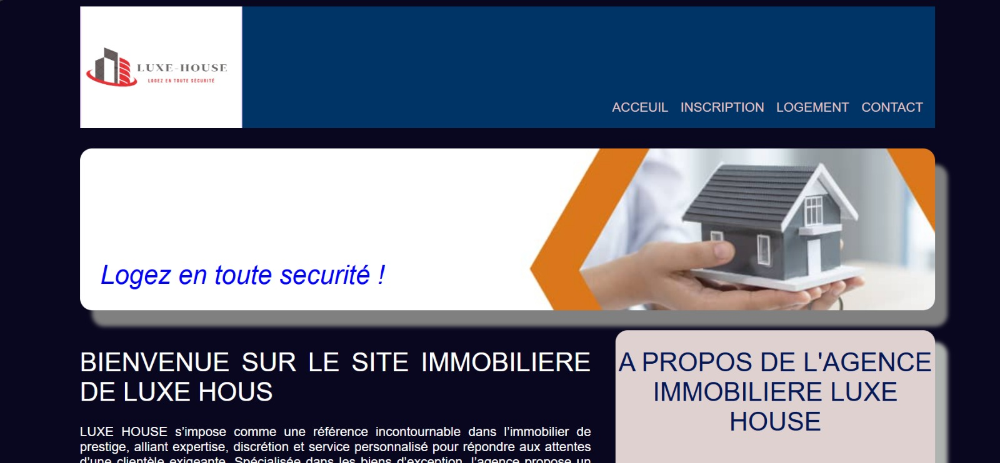
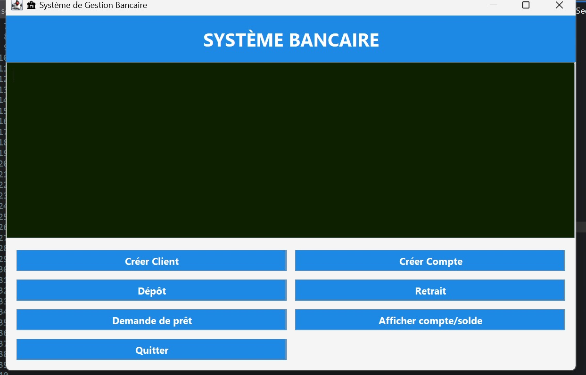
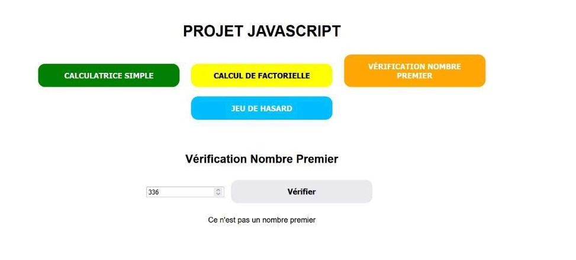
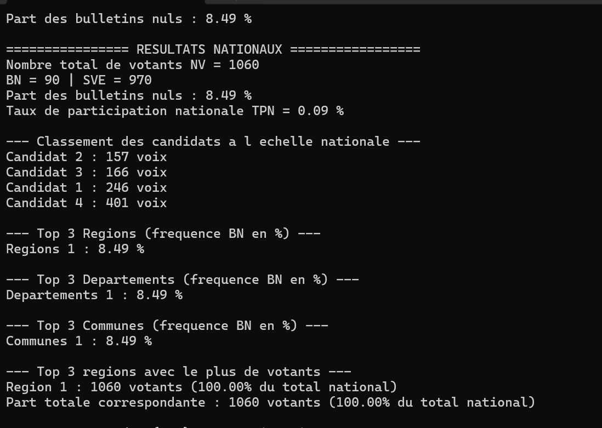

Mes projets et réalisations
Mes projets sont animés par une passion pour la création de solutions concrètes et centrées sur l’utilisateur. Chacune présente un défi unique, où je privilégie la qualité, l’efficacité et l’innovation. Voici quelques-uns de mes projets récents. N'hésitez pas à me contacter pour en savoir plus ou pour discuter de collaborations potentielles.
- Projet HTML/CSS: Agence immobilière (Février 2025)
- Projet JAVA: Gestion d'une banque (Janvier 2026)
- Projet en C: Election présidentielle (Janvier 2026)
- Portfolio professionnel à l'aide de (HTML et TAILWINDCSS)

Projet HTML/CSS

Projet JAVA

Projet JavaScript

Projet C